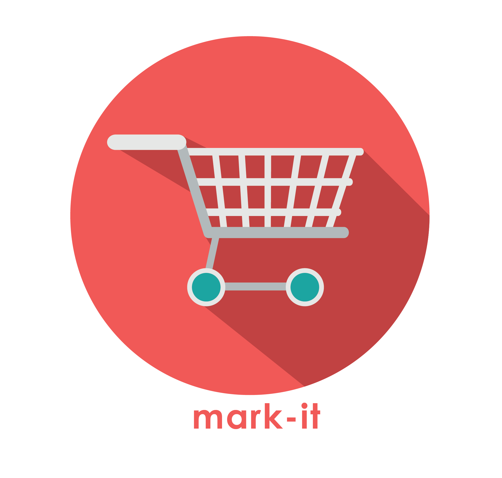

<ion-header>
  <ion-toolbar style="--background: white; color: black;">
    <ion-buttons slot="start">
      <ion-back-button defaultHref="/"></ion-back-button>
    </ion-buttons>
    <ion-title>Checkout History</ion-title>
  </ion-toolbar>
</ion-header>

<ion-content>
  <ion-list-header style="color: black">
    Checkout History: {{ histCounter }}
  </ion-list-header>
  <ion-list style="background-color: white;" *ngFor = "let hist of hist ">
 
    <ion-item text-wrap>
        <!-- <ion-icon name="american-football" item-start></ion-icon> -->
        <ion-avatar slot="start">
          
        </ion-avatar>
        <ion-label>
            <h2>{{ hist.check_code }}</h2>
            <p>{{ hist.check_date | date }}</p>
        </ion-label>
        <ion-button style="--background: #353148;" item-end><span style="color: white;" (click)="openModal(hist)">View</span></ion-button>
    </ion-item>
</ion-list>

  
 
</ion-content>
